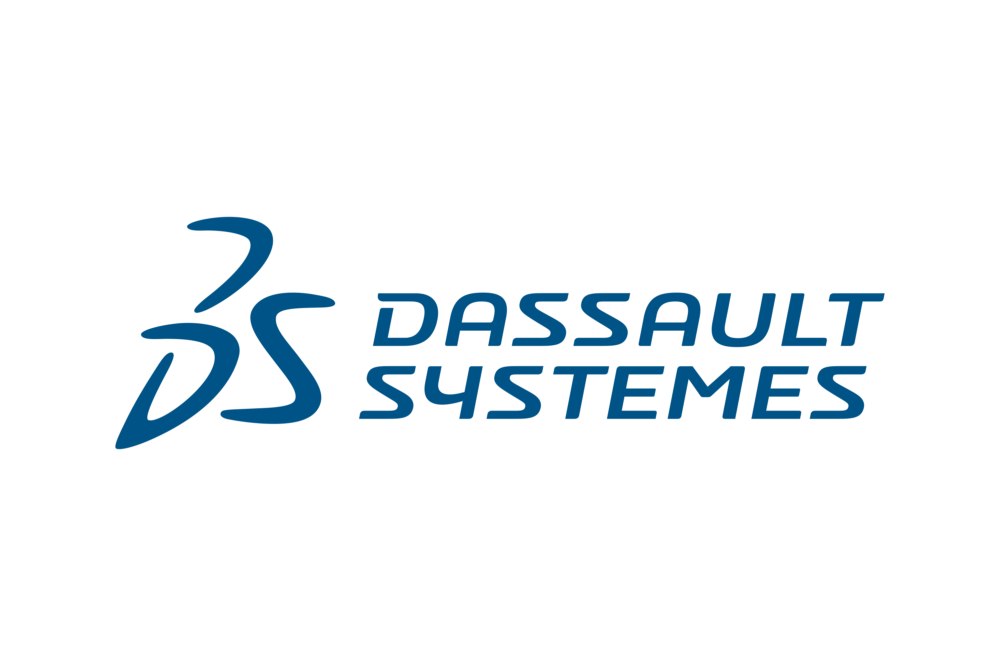

CDI · 2026 - Présent


R&D Automation Software Engineer
Dassault Systèmes · Vélizy-Villacoublay
Conception d'outils d'automatisation de test performants et augmentés par l'IA (LLM-as-a-Judge, assistants métiers, SDKs modulaires, Playwright).
Python
Playwright
LLM-as-a-Judge
+6
Détails & Galerie →
↗